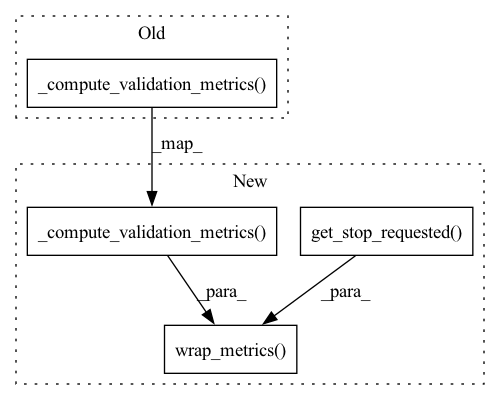

Pattern ID :15432

Before Change
// re-enters the train_and_evaluate() loop.
break
elif wkld.kind == workload.Workload.Kind.COMPUTE_VALIDATION_METRICS:
response_func(self._compute_validation_metrics())
elif wkld.kind == workload.Workload.Kind.CHECKPOINT_MODEL:
check.len_eq(args, 1)
check.is_instance(args[0], pathlib.Path)
After Change
break
elif wkld.kind == workload.Workload.Kind.COMPUTE_VALIDATION_METRICS:
response_func(
det.util.wrap_metrics(
self._compute_validation_metrics(),
self.estimator_trial_controller.context.get_stop_requested(),
)
)
elif wkld.kind == workload.Workload.Kind.CHECKPOINT_MODEL:
check.len_eq(args, 1)
check.is_instance(args[0], pathlib.Path)
In pattern: SUPERPATTERN
Frequency: 3
Non-data size: 4
Instances
Fragment ID: 52377864
Project Name: determined-ai/determined
Commit Name: d014500af83f34985c2f1e7869cd9a40646b34ee
Time: 2020-06-05
Author: 12980763+brain-good@users.noreply.github.com
File Name: harness/determined/estimator/_estimator_trial.py
M Class Name: DeterminedControlHook
N Class Name: DeterminedControlHook
M Method Name: control_loop(1)
N Method Name: control_loop(1)
M Parent Class: tf.estimator.SessionRunHook
N Parent Class: tf.estimator.SessionRunHook
M File Name: harness/determined/estimator/_estimator_trial.py
N File Name: harness/determined/estimator/_estimator_trial.py
M Start Line: 292
M End Line: 292
N Start Line: 295
N End Line: 298
'>
Before Change
num_batches = cast(int, args[0])
response_func(self._train_for_step(w.step_id, num_batches))
elif w.kind == workload.Workload.Kind.COMPUTE_VALIDATION_METRICS:
response_func(self._compute_validation_metrics())
elif w.kind == workload.Workload.Kind.CHECKPOINT_MODEL:
check.eq(len(args), 1)
check.is_instance(args[0], pathlib.Path)
After Change
)
elif w.kind == workload.Workload.Kind.COMPUTE_VALIDATION_METRICS:
response_func(
util.wrap_metrics(
self._compute_validation_metrics(), self.context.get_stop_requested()
)
)
elif w.kind == workload.Workload.Kind.CHECKPOINT_MODEL:
check.eq(len(args), 1)
check.is_instance(args[0], pathlib.Path)
'>
Fragment ID: 52377863
Project Name: determined-ai/determined
Commit Name: d014500af83f34985c2f1e7869cd9a40646b34ee
Time: 2020-06-05
Author: 12980763+brain-good@users.noreply.github.com
File Name: harness/determined/pytorch/_pytorch_trial.py
M Class Name: PyTorchTrialController
N Class Name: PyTorchTrialController
M Method Name: run(1)
N Method Name: run(1)
M Parent Class: det.LoopTrialController
N Parent Class: det.LoopTrialController
M File Name: harness/determined/pytorch/_pytorch_trial.py
N File Name: harness/determined/pytorch/_pytorch_trial.py
M Start Line: 258
M End Line: 261
N Start Line: 258
N End Line: 269
'>
Before Change
self.train_response_func = response_func
break
elif wkld.kind == workload.Workload.Kind.COMPUTE_VALIDATION_METRICS:
response_func(self._compute_validation_metrics())
elif wkld.kind == workload.Workload.Kind.CHECKPOINT_MODEL:
check.len_eq(args, 1)
check.is_instance(args[0], pathlib.Path)
After Change
break
elif wkld.kind == workload.Workload.Kind.COMPUTE_VALIDATION_METRICS:
response_func(
det.util.wrap_metrics(
self._compute_validation_metrics(), self.context.get_stop_requested()
)
)
elif wkld.kind == workload.Workload.Kind.CHECKPOINT_MODEL:
check.len_eq(args, 1)
check.is_instance(args[0], pathlib.Path)
'>
Fragment ID: 52377862
Project Name: determined-ai/determined
Commit Name: d014500af83f34985c2f1e7869cd9a40646b34ee
Time: 2020-06-05
Author: 12980763+brain-good@users.noreply.github.com
File Name: harness/determined/tensorpack/_tensorpack_trial.py
M Class Name: ManagerCallback
N Class Name: ManagerCallback
M Method Name: _control_loop(1)
N Method Name: _control_loop(1)
M Parent Class: tp.callbacks.Callback
N Parent Class: tp.callbacks.Callback
M File Name: harness/determined/tensorpack/_tensorpack_trial.py
N File Name: harness/determined/tensorpack/_tensorpack_trial.py
M Start Line: 246
M End Line: 246
N Start Line: 253
N End Line: 255